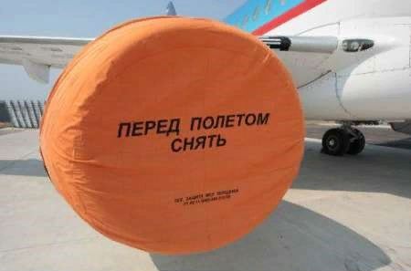

1 Introduction
People have always copied things. In the past, most items of value were physical objects.
Patent law and economies of scale meant that small scale copying of physical objects was usually uneconomic,
and large-scale copying (if it infringed) was stoppable using policemen and courts. Today, things of value are increasingly less tangible:
often they are just bits and bytes or can be accurately represented as bits and bytes.
The widespread deployment of packet-switched networks and the huge advances in computers and codec-technologies has made it feasible (and indeed attractive) to deliver
such digital works over the Internet. This presents great opportunities and great challenges.
The opportunity is low-cost delivery of personalized, desirable high-quality content.
The challenge is that such content can be distributed illegally.
Copyright law governs the legality of copying and distribution of such valuable data, but copyright protection is increasingly
strained in a world of programmable computers and high-speed networks.
For example, consider the staggering burst of creativity by authors of computer programs that are designed to share audio files.
This was first popularized by Napster, but today several popular applications and services offer similar capabilities.
CD-writers have become mainstream, and DVD-writers may well follow suit. Hence, even in the absence of network connectivity, the opportunity for low-cost,
large-scale file sharing exists.
2 The Darknet
Throughout this paper, we will call the shared items (e.g. software programs, songs, movies, books, etc.) objects.
The persons who copy objects will be called users of the darknet, and the computers used to share objects will be called hosts.
The darknet is the distribution network that emerges from the injection of objects according to assumption 1 and the distribution
of those objects according to assumptions 2 and 3.
One implication of the first assumption is that any content protection system will leak popular or interesting content into the darknet,
because some fraction of users--possibly experts–will overcome any copy prevention mechanism or because the object will enter the darknet
before copy protection occurs.
The term “widely distributed” is intended to capture the notion of mass market distribution of objects to thousands or millions of practically anonymous users.
This is in contrast to the protection of military, industrial, or personal secrets, which are typically not widely distributed and are not the focus of this paper.
2.1 Central Internet Servers
By 1998, a new form of the darknet began to emerge from technological advances in several areas.
The internet had become mainstream, and as such its protocols and infrastructure could now be relied upon by anyone seeking to connect users with
a centralized service or with each other. The continuing fall in the price of storage together with advances in compression technology had
also crossed the threshold at which storing large numbers of audio files was no longer an obstacle to mainstream users. Additionally,
the power of computers had crossed the point at which they could be used as rendering devices for multimedia content. Finally, “CD ripping”
became a trivial method for content injection.

The first embodiments of this new darknet were central internet servers with large collections of MP3 audio files.
A fundamental change that came with these servers was the use of a new distribution network: The internet displaced the sneaker net
– at least for audio content. This solved several problems of the old darknet. First, latency was reduced drastically.
Secondly, and more importantly, discovery of objects became much easier because of simple and powerful search mechanisms – most importantly
the general-purpose world-wide-web search engine. The local view of the small world was replaced by a global view of the entire collection accessible by all users.
The main characteristic of this form of the darknet was centralized storage and search – a simple architecture that mirrored mainstream internet servers.
2.2 Central Internet Servers
Centralized or quasi-centralized distribution and service networks make sense for legal online commerce.
Bandwidth and infrastructure costs tend to be low, and having customers visit a commerce site means the merchant can display adverts,
collect profiles, and bill efficiently. Additionally, management, auditing, and accountability are much easier in a centralized model.

However, centralized schemes work poorly for illegal object distribution because large, central servers are large single points of failure:
If the distributor is breaking the law, it is relatively easy to force him to stop. Early MP3 Web and FTP sites were commonly “hosted” by universities,
corporations, and ISPs. Copyright-holders or their representatives sent “cease and desist” letters to these web-site operators and web-owners
citing copyright infringement and in a few cases followed up with legal action [15]. The threats of legal action were successful attacks on those
centralized networks, and MP3 web and FTP sites disappeared from the mainstream shortly after they appeared.
However, centralized schemes work poorly for illegal object distribution because large, central servers are large single points of failure
Early MP3 Web and FTP sites were commonly “hosted” by universities, corporations, and ISPs. Copyright-holders or their representatives sent “cease and desist” letters
The threats of legal action were successful attacks on those centralized networks, and MP3 web and FTP sites disappeared from the mainstream shortly after they appeared.
-
Secondly, and more importantly, discovery of objects became much easier because of simple and powerful search mechanisms – most importantly the general-purpose
-
distributor is breaking the law, it is relatively easy to force him to stop. Early MP3 Web and FTP sites were commonly “hosted” by universities
-
By 1998, a new form of the darknet began to emerge from technological advances in several areas.
The internet had become mainstream, and as such its protocols and infrastructure